01. Portfolio
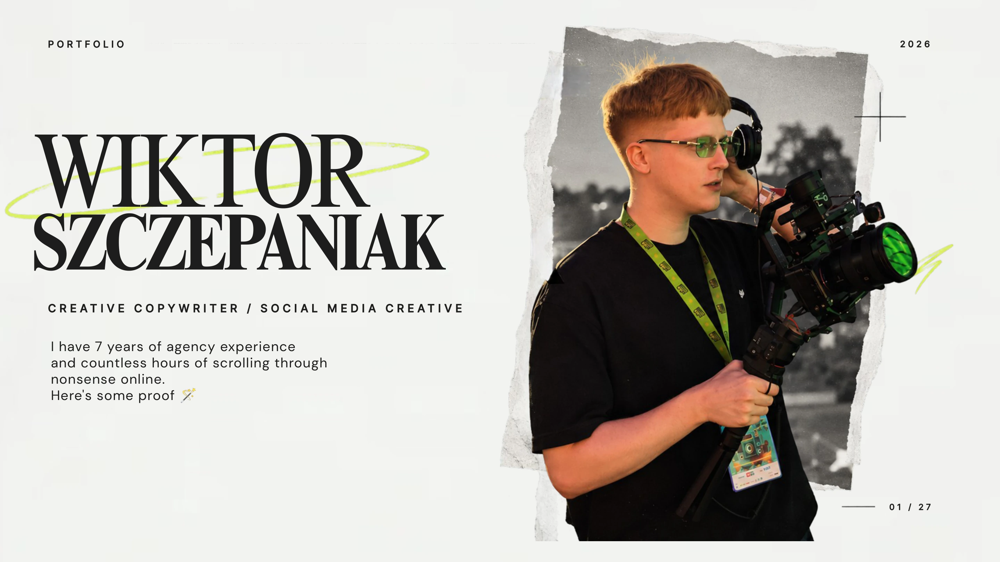
Slide 1 transcript
WIKTOR SZCZEPANIAK CREATIVE COPYWRITER / SOCIAL MEDIA CREATIVE I have 7 years of agency experience and countless hours of scrolling through nonsense online. Here's some proof 🪄 PORTFOLIO 01 / 27 2026
02. About me
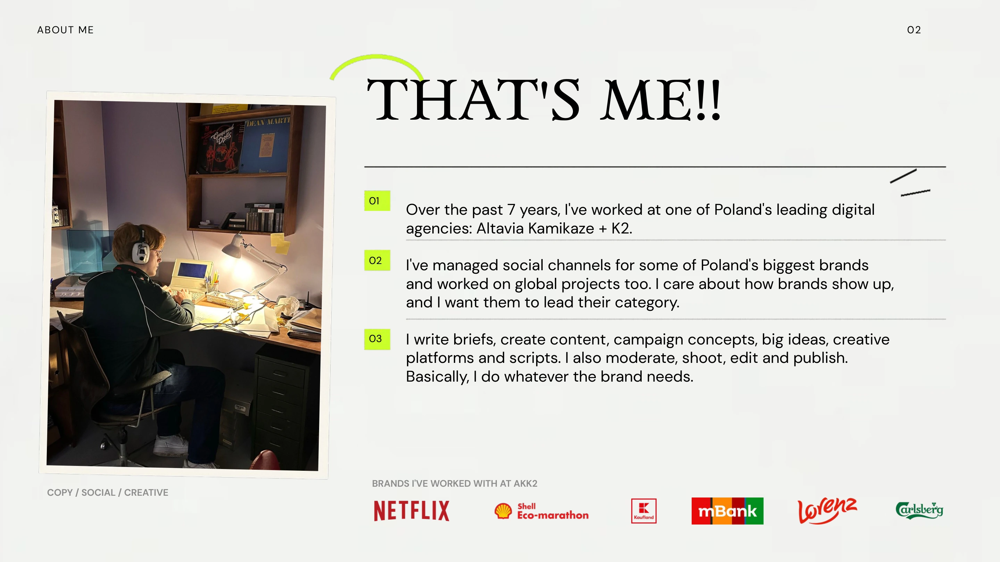
Slide 2 transcript
ABOUT ME 02 THAT'S ME!! BRANDS I'VE WORKED WITH AT AKK2 Over the past 7 years, I've worked at one of Poland's leading digital agencies: Altavia Kamikaze + K2. I've managed social channels for some of Poland's biggest brands and worked on global projects too. I care about how brands show up, and I want them to lead their category. I write briefs, create content, campaign concepts, big ideas, creative platforms and scripts. I also moderate, shoot, edit and publish. Basically, I do whatever the brand needs. 01 02 03 COPY / SOCIAL / CREATIVE
03. Specialties
Slide 3 transcript
Specialties Copywriting Creative concepts Social Media I create consistent communication tailored to each channel. Posts that genuinely engage people, not just fill up the feed. I write copy that resonates with people. From short social captions to full-length scripts. I develop distinctive campaign concepts that cut through the noise and are tailored to the brief. 03 *THE CHOCOLATE DRAMA* *The guy in the photo goes by the nickname Uno. The copy refers to the boxes of chocolates he gave to two different girls on the Netflix show. English translation — intro: Which opening credits do you never skip? English translation — chocolates: Take uno, get segundo FREE. English translation — festivals: Which festival are you heading to this year?
04. Case studies
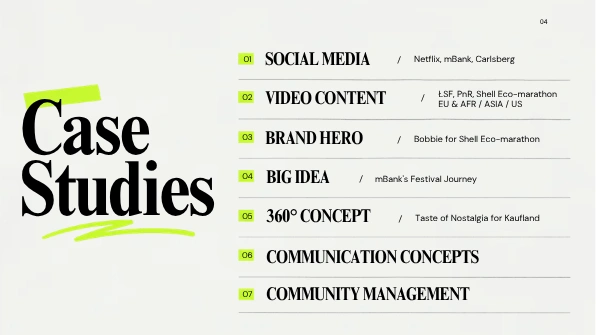
Slide 4 transcript
SOCIAL MEDIA Netflix, mBank, Carlsberg VIDEO CONTENT ŁSF, PnR, Shell Eco-marathon EU & AFR / ASIA / US BRAND HERO Bobbie for Shell Eco-marathon BIG IDEA mBank's Festival Journey 360° CONCEPT Taste of Nostalgia for Kaufland COMMUNICATION CONCEPTS COMMUNITY MANAGEMENT Case Studies 01 / 02 / 03 / 04 / 05 / 06 07 04
05. Social Media
Slide 5 transcript
Social Media Over the past 7 years, I've written copy and developed campaigns for: POST / X 05 Facebook Instagram TikTok YouTube X LinkedIn 01 02 03 04 05 06 LINK ↗ LINK ↗ VIDEO / IG English translation — jojo: Saddle up! The most memeable anime ever is back. STEEL BALL RUN JoJo’s Bizarre Adventure is now on Netflix!
06. Tone of Voice
Slide 6 transcript
Tone of Voice I tailor each brand's tone of voice to its audience and platform. I've managed social channels across a wide range of industries: banking streaming platforms supermarkets retail / DIY snacks global projects LINK ↗ LINK ↗ LINK ↗ *Qoutation of a famous rap song. English translation — carlsberg: “Lagun.” Probably. Carlsberg. Probably. English translation — minecraft: We get: emeralds. You get: up to PLN 760 for opening an account, free BLIK payments, payments by phone or watch, a card with your own design, and payment requests to a parent or friend. English translation — shopping: If I have to, I’ll buy whatever it takes. Comment: “I’d sell water to a dolphin if I had to.” English translation — netflix-intro: Which opening credits do you never skip?
07. My socials

Slide 7 transcript
61.9K LINK ↗ 11.8K 12.4K 07 L I K E S 46 comments / 581 reposts / 2K shares L I K E S 32 comments / 158 reposts / 2.9K shares L I K E S 171 comments / 530 reposts / 34.2K shares My socials relevant trends, current events and things people actually relate to. I create posts that genuinely engage people by tapping into 31 December LINK ↗ LINK ↗ What do we do? Shall we consume? Oh fu*k, he’s coming. English translation — amnesia: “I’m sorry, you’ve lost your memory.” Me the next day: English translation — moustache: Dads with this moustache today: a 99% chance of “See you next year”. Comment: “Looks like we’ve got new meme competition.” English translation — students: Students when the lecturer appears 14 minutes after class was meant to start. My cold dinner after I’ve spent 20 minutes choosing what to watch.
08. Organic

Slide 8 transcript
Organic organic social, but I'm also comfortable with paid content. 08 Most of my experience is in building communities through 16.3K L I K E S 31 comments / 502 reposts / 8.2K shares 7.4K L I K E S 25 comments / 103 reposts / 1.6K shares 11.5K L I K E S 42 comments / 416 reposts / 2.4K shares Quick horoscope check? 👀 build engaged communities. I believe a healthy balance between the two approaches helps LINK ↗ LINK ↗ LINK ↗ Fu*ck it, I’ll try. English translation — neighbour: You’re trying to watch, but your neighbour puts on this banger: English translation — christmas: When you’ve hated Christmas food your whole life, but you’ve finally reached that age: English translation — horoscope: SCORPIO: “You’re going to jail, you nutter!” LIBRA: “I don’t trust doctors who smoke or call me ‘sunshine’.” English translation — zodiacs: GEMINI / AQUARIUS / SAGITTARIUS
09. RTM & key dates
Slide 9 transcript
09 RTM & key dates I actively spot timely topics and trends that will interest the audience and can be connected naturally to the brand. LINK ↗ LINK ↗ LINK ↗ 1.7K LIKES 4 comments 3.3K LIKES 82 comments 209 LIKES 25 comments ”1670" is a well known comedy show in Poland based in polish modern times. “Sigma” was announced polish 2024 youngsters word of a year. Premiere of an influencer fandom docummentary. English translation — sigma: Got an mBank account? Ooh, you’re a sigma. English translation — cinema: I want to go to the cinema with you to see “Żugajki”. From: … To: …
10. Contests
Slide 10 transcript
10 Contests I also have plenty of experience running contests. I know how to get people genuinely excited to take part. LINK ↗ LINK ↗ 3.6K LIKES 856 comments 4.5K LIKES 919 comments English translation — labubu: GIVEAWAY! 10 Labubu Blind Boxes up for grabs. English translation — moonfest: GIVEAWAY! “Hey lovelies, Moonfest is just around the corner.”
11. Briefing and influencer collaborations
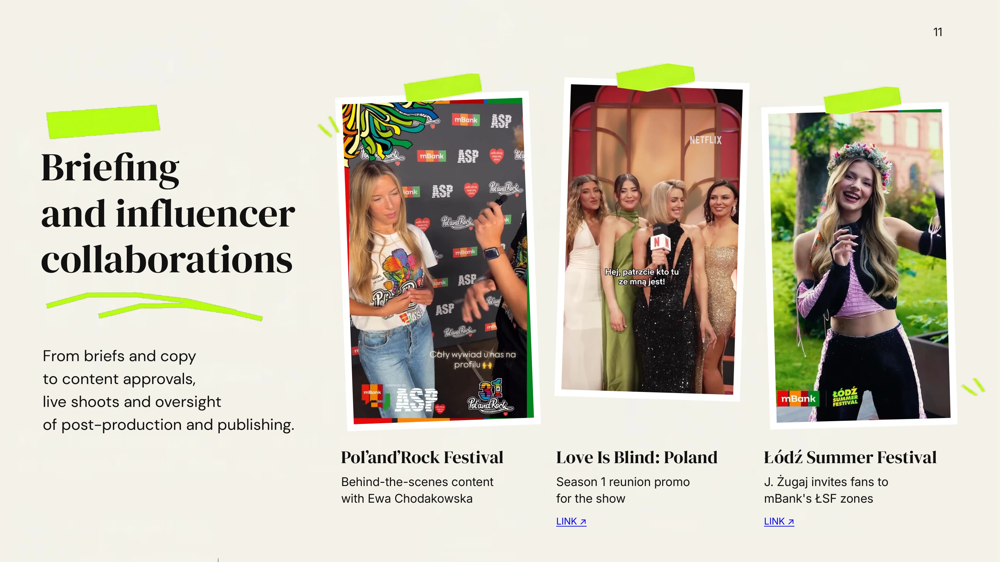
Video could not load. Open the video
Video could not load. Open the video
Video could not load. Open the video
Slide 11 transcript
11 Briefing and influencer collaborations From briefs and copy to content approvals, live shoots and oversight of post-production and publishing. Pol’and’Rock Festival Behind-the-scenes content with Ewa Chodakowska Love Is Blind: Poland Season 1 reunion promo for the show LINK ↗ Łódź Summer Festival J. Żugaj invites fans to mBank's ŁSF zones LINK ↗
12. Video content
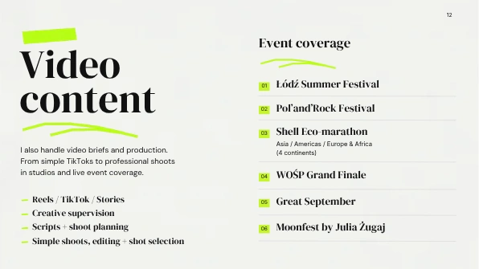
Slide 12 transcript
12 Video content I also handle video briefs and production. From simple TikToks to professional shoots in studios and live event coverage. Reels / TikTok / Stories Creative supervision Scripts + shoot planning Simple shoots, editing + shot selection Event coverage 01 Łódź Summer Festival 02 Pol’and’Rock Festival 03 Shell Eco-marathon Asia / Americas / Europe & Africa (4 continents) 04 WOŚP Grand Finale 05 Great September 06 Moonfest by Julia Żugaj
13. Video formats
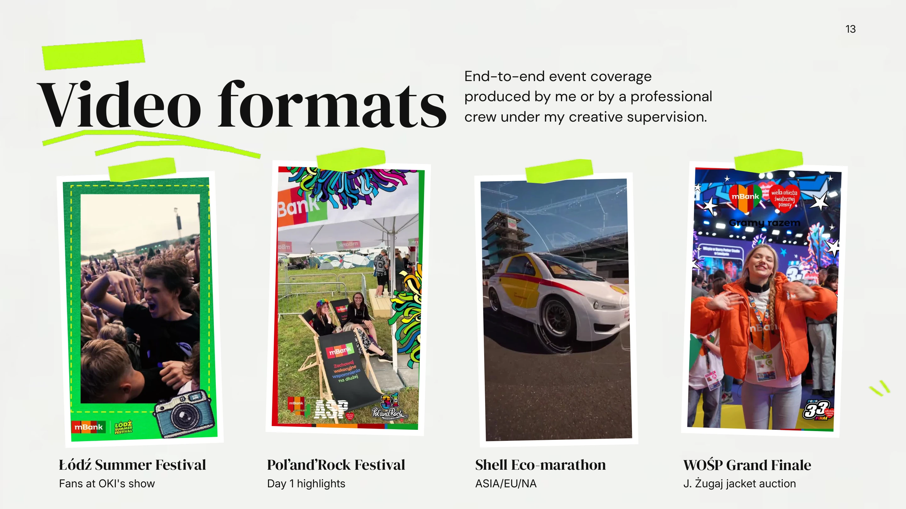
Video could not load. Open the video
Video could not load. Open the video
Video could not load. Open the video
Video could not load. Open the video
Slide 13 transcript
13 Video formats End-to-end event coverage produced by me or by a professional crew under my creative supervision. Łódź Summer Festival Fans at OKI's show Pol’and’Rock Festival Day 1 highlights Shell Eco-marathon ASIA/EU/NA WOŚP Grand Finale J. Żugaj jacket auction
14. Video formats
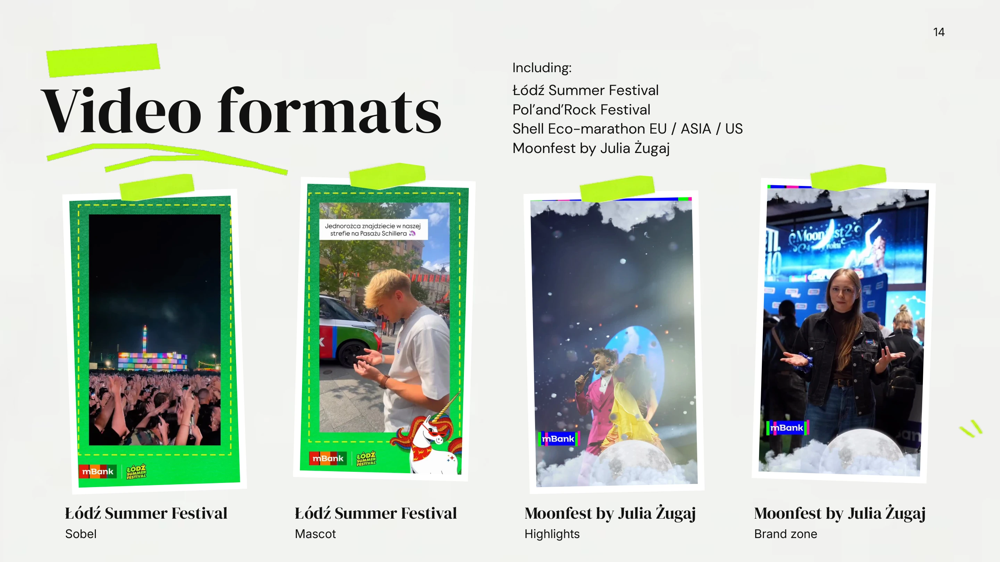
Video could not load. Open the video
Video could not load. Open the video
Video could not load. Open the video
Video could not load. Open the video
Slide 14 transcript
14 Video formats Including: Łódź Summer Festival Pol’and’Rock Festival Shell Eco-marathon EU / ASIA / US Moonfest by Julia Żugaj Łódź Summer Festival Sobel Łódź Summer Festival Mascot Moonfest by Julia Żugaj Highlights Moonfest by Julia Żugaj Brand zone
15. Brand hero
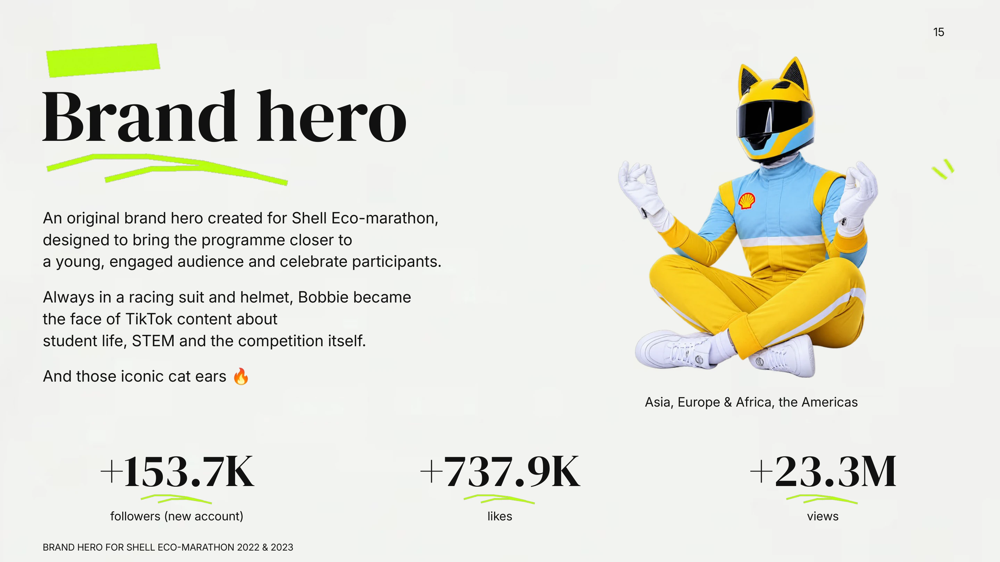
Slide 15 transcript
15 Brand hero An original brand hero created for Shell Eco-marathon, designed to bring the programme closer to a young, engaged audience and celebrate participants. Always in a racing suit and helmet, Bobbie became the face of TikTok content about student life, STEM and the competition itself. And those iconic cat ears 🔥 Asia, Europe & Africa, the Americas +153.7K followers (new account) +737.9K likes +23.3M views BRAND HERO FOR SHELL ECO-MARATHON 2022 & 2023
16. Bobbie for Shell Eco-marathon
Slide 16 transcript
16 Bobbie for Shell Eco- marathon A brand hero created from scratch. A tone of voice that turned engineering jargon into engaging student-first content for audiences across four continents. Filming also took place across multiple continents. LINK ↗ LINK ↗ 283.5K LIKES 599 comments / 1K saves 1.5K shares 168.5K LIKES 969 comments / 567 saves 3.4K shares
17. Campaign summary
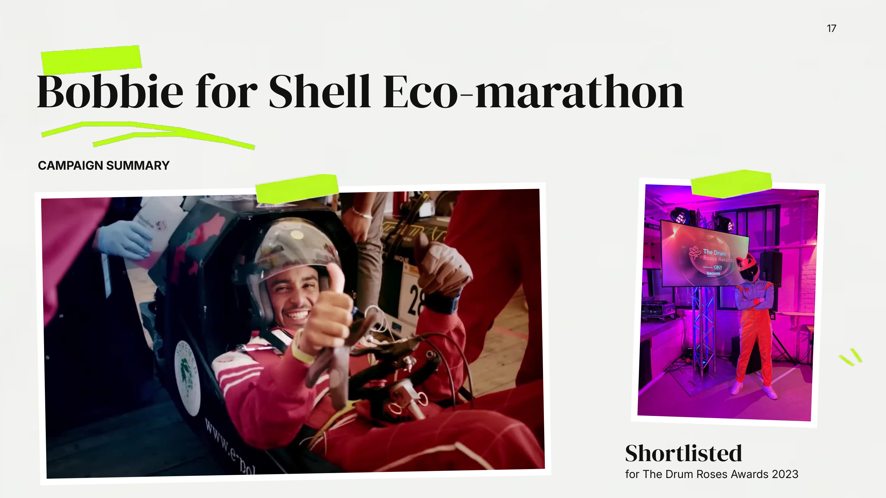
Video could not load. Open the video
Slide 17 transcript
17 Bobbie for Shell Eco-marathon CAMPAIGN SUMMARY Shortlisted for The Drum Roses Awards 2023
18. Festival Journey
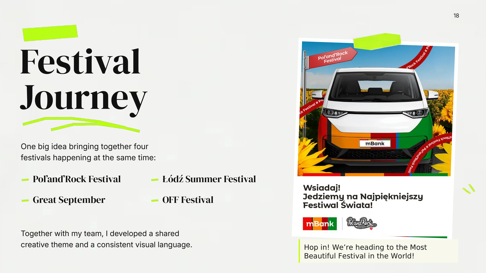
Slide 18 transcript
18 Festival Journey One big idea bringing together four festivals happening at the same time: Pol’and’Rock Festival Łódź Summer Festival Great September OFF Festival Together with my team, I developed a shared creative theme and a consistent visual language. English translation — roadtrip: Hop in! We’re heading to the Most Beautiful Festival in the World!
19. Big Idea
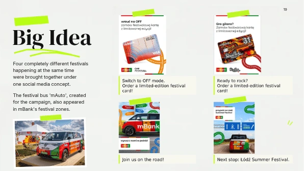
Slide 19 transcript
19 Big Idea Four completely different festivals happening at the same time were brought together under one social media concept. The festival bus 'mAuto', created for the campaign, also appeared in mBank's festival zones. English translation — off: Switch to OFF mode. Order a limited-edition festival card! English translation — pandr: Ready to rock? Order a limited-edition festival card! English translation — van: Join us on the road! English translation — lodz: Next stop: Łódź Summer Festival.
20. Taste of Nostalgia
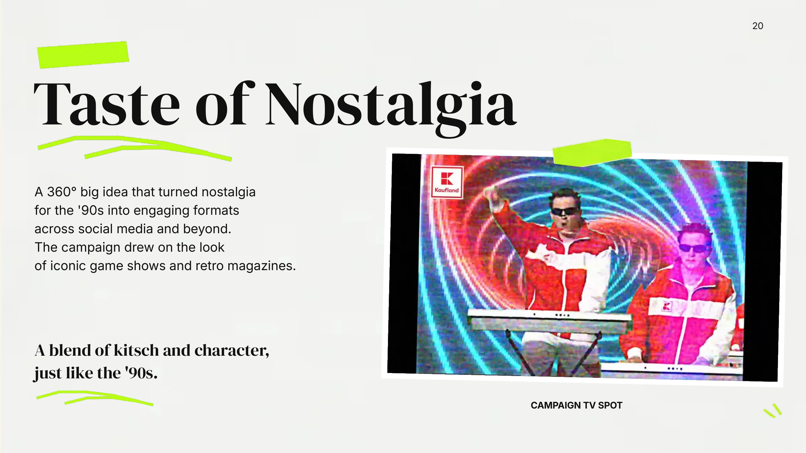
Video could not load. Open the video
Slide 20 transcript
20 Taste of Nostalgia A 360° big idea that turned nostalgia for the '90s into engaging formats across social media and beyond. The campaign drew on the look of iconic game shows and retro magazines. A blend of kitsch and character, just like the '90s. CAMPAIGN TV SPOT
21. Taste of Nostalgia — posts
Slide 21 transcript
21 Taste of Nostalgia 139 comments 429 saves 370 shares 4.3K LIKES LINK ↗ 7K LIKES 124 comments LINK ↗ The campaign brought the '90s back through a series of retro-styled posts. 53 comments 319 saves 51 shares 4.3K LIKES LINK ↗ English translation — desserts: GRANDMA’S FRIDGE: DESSERT SHOWDOWN No-bake cheesecake vs jelly in a glass.
22. Taste of Nostalgia — contest
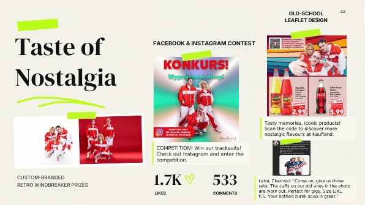
Slide 22 transcript
22 Taste of Nostalgia CUSTOM-BRANDED RETRO WINDBREAKER PRIZES FACEBOOK & INSTAGRAM CONTEST 1.7K 533 LIKES COMMENTS OLD-SCHOOL LEAFLET DESIGN English translation — competition: COMPETITION! Win our tracksuits! Check out Instagram and enter the competition. English translation — leaflet: Tasty memories, iconic products! Scan the code to discover more nostalgic flavours at Kaufland. English translation — comment: Letni, Chamski: “Come on, give us three sets! The cuffs on our old ones in the photo are worn out. Perfect for gigs. Size L/XL. P.S. Your bottled żurek soup is great.”
23. Communication concepts
Slide 23 transcript
23 Communication concepts I also develop communication concepts for products and apps across categories. A tagline developed for the ongoing campaign for Žatecký Letký Pils: “Light pilsner. Full of flavour.” LINK ↗ An ongoing social format introducing a new app and highlighting its everyday features while keeping the audience engaged. LINK ↗ English translation — pils: NEW. Light pils, full of flavour. Only at Żabka. English translation — app: Don’t let a good deal disappear right under your nose! “Is this what you’re after?” mOkazje Zakupy
24. Community management
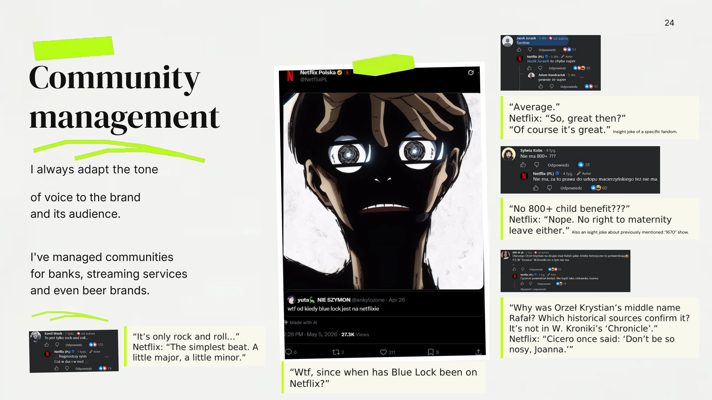
Slide 24 transcript
24 Community management I always adapt the tone of voice to the brand and its audience. I've managed communities for banks, streaming services and even beer brands. Insight joke of a specific fandom. Also an isight joke about previously mentioned “1670” show. English translation — bluelock: “Wtf, since when has Blue Lock been on Netflix?” English translation — rock: “It’s only rock and roll…” Netflix: “The simplest beat. A little major, a little minor.” English translation — average: “Average.” Netflix: “So, great then?” “Of course it’s great.” English translation — 800: “No 800+ child benefit???” Netflix: “Nope. No right to maternity leave either.” English translation — cicero: “Why was Orzeł Krystian’s middle name Rafał? Which historical sources confirm it? It’s not in W. Kroniki’s ‘Chronicle’.” Netflix: “Cicero once said: ‘Don’t be so nosy, Joanna.’”
25. Moderation — livestream
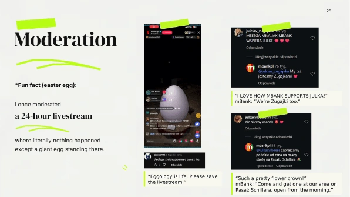
Slide 25 transcript
25 Moderation *Fun fact (easter egg): I once moderated a 24-hour livestream where literally nothing happened except a giant egg standing there. English translation — egg: “Eggology is life. Please save the livestream.” English translation — zugajki: “I LOVE HOW MBANK SUPPORTS JULKA!” mBank: “We’re Żugajki too.” English translation — flowers: “Such a pretty flower crown!” mBank: “Come and get one at our area on Pasaż Schillera, open from the morning.”
26. Outside work
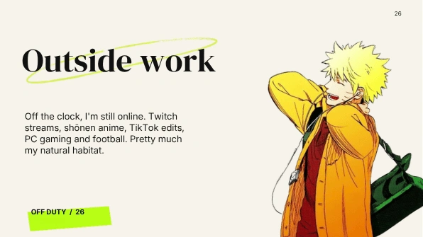
Slide 26 transcript
26 Off the clock, I'm still online. Twitch streams, shōnen anime, TikTok edits, PC gaming and football. Pretty much my natural habitat. OFF DUTY / 26 Outside work
27. Contact
Slide 27 transcript
27 Let's talk 🤝 E-MAIL wiktor.szczepaniak.kontakt@gmail.com SOCIAL MEDIA @geengeraf PHONE +48 782 819 517